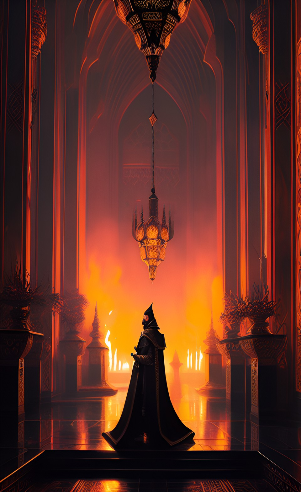

cssclass: wide-pageDominar is the ruler of a Dominion managing the estate of the empire by hereditary
High Master of Diplomatic Affairs is a high-ranking official responsible for managing the Empire's relations with Allies, negotiating treaties and alliances with other nations, and representing the Empire in international forums.
The Grand Overseer of Royal Treasure is a high-ranking government official in charge of the country's finances and economic policies. This position is responsible for managing the government's revenue and expenses and overseeing the administration of the financial court bureaucracy. The Grand Overseer is tasked with preparing the annual budget and advising the Emperor on financial matters. This position holds a great deal of influence and is considered one of the most important in the government. The Grand Overseer plays a key role in shaping the financial policies of the empire and ensuring that they align with the government's overall strategy and goals.
Master of the Mint: Responsible for minting the currency of the empire and ensuring its stability.
Manages the financial affairs of the imperial court, including paying salaries and expenses.
Master of Revenue - responsible for collecting taxes and revenue on behalf of the empire, ensuring that all revenue streams are optimized.
Warden of the Staple: In charge of the storage and distribution of important commodities, such as vitales.
Royal Justiciar: The highest judicial officer of the kingdom, responsible for overseeing the administration of justice and interpreting the laws of the kingdom.
Keeper of the Royal Seals: Responsible for the safekeeping of the empire official seals and documents.

Also known as The Father
The Imperial Advisor is an advisor to the Emperor, providing counsel and guidance on important matters of state. The Imperial Advisor typically holds a high level of influence and is responsible for advising the Emperor on a wide range of policy and governance issues.
The High Commander of the Forces is a position in the Royal Court responsible for leading and commanding the knight forces in the field. This person is tasked with making strategic and tactical decisions, ensuring that the army is properly equipped and trained, and leading the military in times of war.
Responsibilities:
Crimson Battalions, Royal Vanguard, Iron Legion
The Warlord of the Realm is a title used in the Styx Empire to refer to the leader of a vassal army. This individual is responsible for ensuring that their army follows the plans and directives set forth by the High Commander of the Forces. The Warlord is a key figure in maintaining the strength and unity of the empire's military, as well as contributing to the success of military operations.
Duties and Responsibilities:
The Warlord of the Realm plays a crucial role in the Styx Empire's military operations and helps to ensure the success of their armies in the field. As a high-ranking official in the Royal Court, the Warlord is expected to display the highest level of leadership and strategic thinking, and to act in the best interests of the empire and its citizens.
from Servus and managing Sentries/Sentinels and Supply?
The Mother is a notorious bounty hunter group operating in the shadows of society. Their nefarious activities revolve around the kidnapping of children from their families, with the intention of selling them to the immortal nobility as adopted heirs. However, their brutal selection process is far from fair. Children who do not meet their stringent criteria or fail to impress the immortals are condemned to a life of slavery, while the chosen ones are sent to the prestigious School for Immortal Heir, where they undergo intensive training.
The Mother's operations fear into the hearts of either poor or rich parents alike across the land, as they brazenly snatch children from their homes under the cover of darkness. The group is shrouded in utmost secrecy, their true identities hidden behind masks and aliases. They employ a network of paid operatives and trackers, enabling them to locate and capture their targets with ruthless efficiency.
In the cruel world orchestrated by The Mother, children are reduced to commodities, mere objects to be bought and sold. Those deemed worthy of the immortal nobility are given a chance at a privileged life. At the School for Immortal Heir, they are subjected to rigorous training in etiquette, combat, and other forms of arts, preparing them to assume positions of power and influence in the immortal realm.
The Mother's dark deeds have not gone unnoticed, and whispers of their exploits permeate the criminal underworld. Their actions have attracted the attention of rebel factions and concerned citizens, who strive to expose and dismantle their vile operations.
This is a bug callout, but it floats right like an info callout!
This will float to the left.
Bob
“Image.png” could not be found.
| Type | Stat |
|---|---|
| Test | Testing |
| Test | Testing |
| Test | Testing |
| Test | Testing |
The Master of Envoys is a crucial member of the Empire's diplomatic corps, responsible for executing foreign policy initiatives and representing the Empire in the field. As an assistant to the High Master of Diplomatic Affairs, the Master of Envoys is responsible for negotiating treaties, maintaining alliances, and bringing news back to the Empire in times of crisis. This position requires a keen understanding of international relations, excellent negotiating skills, and a deep commitment to the goals and interests of the Empire.